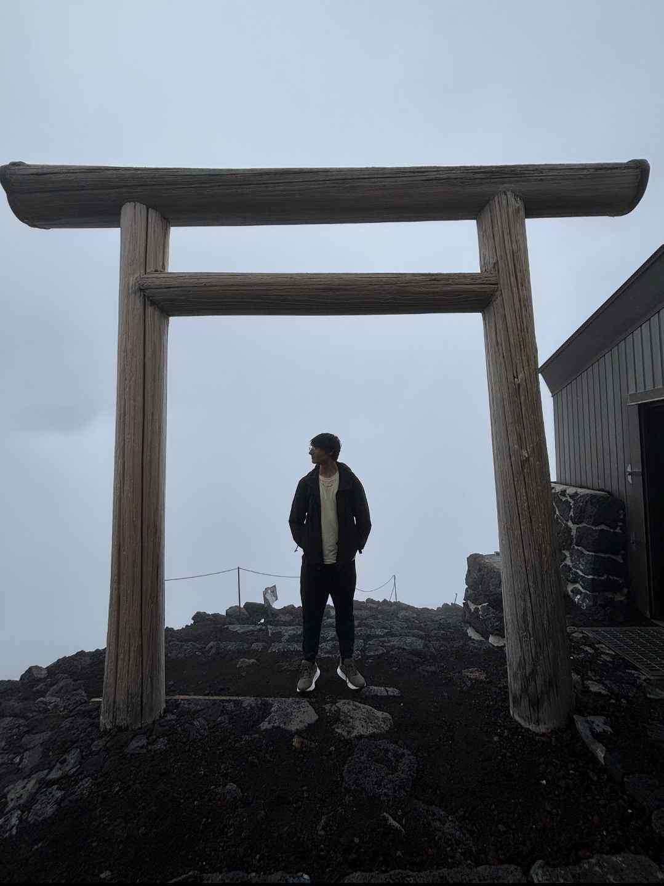

Hey! I am a PhD student at Columbia University interested in Algebraic Topology. I am from Puerto Rico and I completed my undergraduate studies at MIT. You can reach me at ca3172 (at) columbia (dot) edu.
Papers/Preprints
Families of degenerating Poincaré-Einstein metrics on R^4: This paper was the result of a UROP under Professor Tristan Ozuch along with Daniel Santiago.
Dynamical Stability of Translators Under Mean Curvature Flow: This paper was the result of SPUR+. The project was proposed by Professor William Minicozzi and Tang-Kai Lee mentored me along with Ayodeji Linblad.
Seminars
This semester I am running a learning seminar on Infinty Categories .